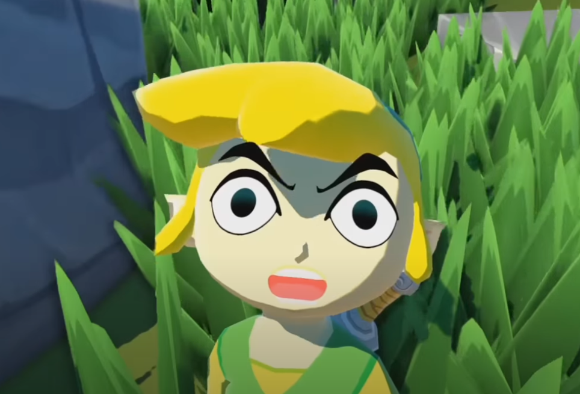

In my analysis, I want to explore some concepts in The Legend Of Zelda: The Wind Waker, using the lens of Massumi's take on "aspect vs. emotion" as well as Althusser's concept of "hailing". Below is the cutscene that I'd like to focus on that depicts the inciting incident of the game. To provide some context, the protagonist, Link, lives on a remote island with his younger sister, Aryll, and their grandma. Pay attention to the score of this scene: it starts off with a wind instrument playing Aryll's Theme, a short motif that is repeated throughout the scene.
As you saw, Aryll was kidnapped by a large bird monster, never to be seen again (as far as Link knows). You can clearly see, both in Link's reactions as well as the music, his range of emotions during and after this event.
Massumi categorizes affect and emotion as two distinct, but connected phenomena--affect as an instinctual, visceral reaction, and emotion as a more categorized, processed response. Link's reaction portrays the concepts of both affect and emotion, and how they intertwine to create a very strong motivation for both the main character and the player.
This is the isolated score from the scene. The line between affect and emotion as Link experiences them is when the music changes tone after Link is saved from falling off of the cliff, at 0:38 in the audio file. The clean transition from portraying the urgency and desparation of the affect, Link's mad dash to save his sister at any cost, to the resignation and helplessness of the emotion once Link realizes he failed to save her.

This event also acts as a "hailing" of both the protagonist and the player. Throughout the game preceding this cutscene, you as the player has become attached to Aryll, or at the very least emphasize with Link's feelings towards her. She's innocent and kind, making it all the more painful when she gets kidnapped by a monstrosity of a scope you've never encountered before. This incident hails you, calling you to leave your island home and explore the "Other" of the larger world around you.